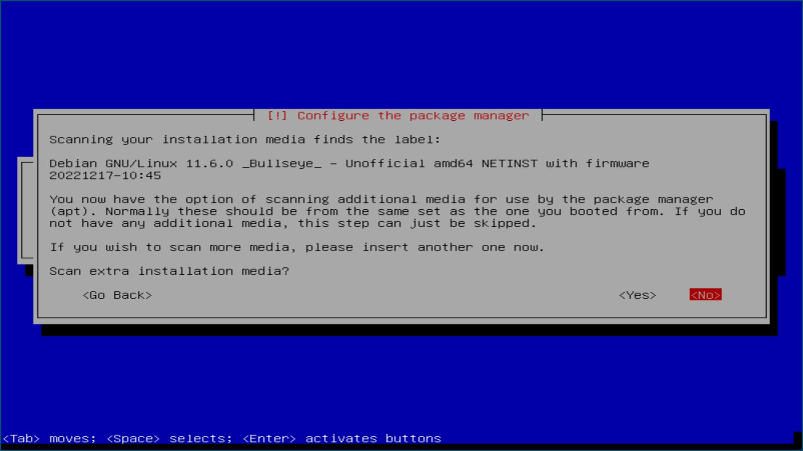
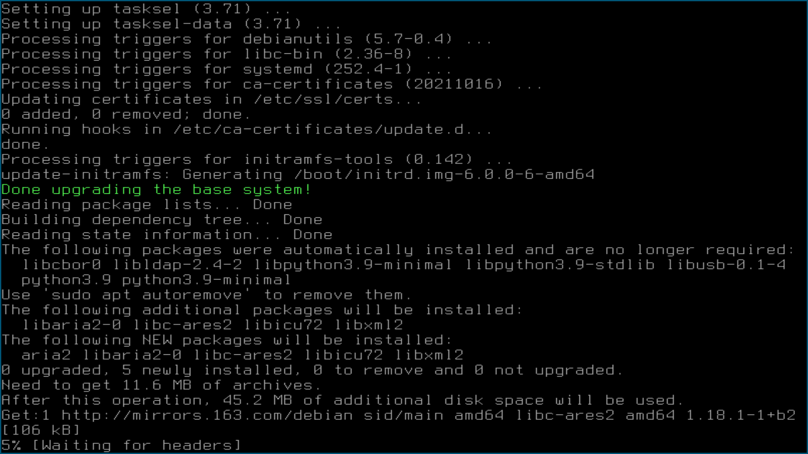

Debian快速安装指导
Table of Contents
1. UEFI
现在（2018年10月）的电脑都很新潮，在主板上几乎都用UEFI取代了传统的BIOS。关于UEFI设置，我的经验是：
- 把下列和Windows相关的选项都关掉（disable）:
Secure bootQuickBoot/FastBootIntel Smart Response Technology (SRT)FastStartup
- 如果在下面的安装过程中（硬盘分区的时候）看不到硬盘，那么你需要在UEFI设置里找到Intel Rapid Storage Technology (Intel RST)，把它设置为AHCI。
2. 安装最小系统
【注意事项】为了避免不必要的麻烦：
- 不要选择图形界面安装（Graphical Install）； 不要图形界面; 不要图形界面;
- 不要选择中文安装界面； 不要中文; 不要中文;
- 不要为root设置密码; 不要root密码; 不要root密码;
- 安装过程中不要联网; 不要联网; 不要联网;
- 只要两个分区
swap和/，换言之，不要/boot, /home, /var, ...等分区。
安装Debian最小系统的大致步骤如下：
- 先准备好一个安装盘（LiveUSB）
下载链接: https://cdimage.debian.org/cdimage/release/current/amd64/bt-cd/
该目录中有三个torrent文件，比如:
- debian-12.7.0-amd64-netinst.iso.torrent <-- 只要这一个 - debian-edu-12.7.0-amd64-netinst.iso.torrent - debian-mac-12.7.0-amd64-netinst.iso.torrent
把名字最短的那个（也就是上面三个中的第一个）下载下来。在 Debian/Ubuntu平台BT下载很容易，敲个命令就行了，比如：
aria2c --no-conf debian-12.7.0-amd64-netinst.iso.torrent # 文件名太长？那么就： aria2c --no-conf deb<TAB> # <TAB> 指的是键盘上的 TAB 键，它能帮你补全文件名。
下载得到的是一个600多兆的iso文件，我们需要把它“刻”到U盘上。
制作U盘: 在Debian/Ubuntu平台上制作启动U盘非常简单，敲个命令就行了：
sudo cp debian-12.7.0-amd64-netinst.iso /dev/sdX # 把 sdX 换成 sdb 或者 sdc。 # 用 lsblk 命令看一眼， # 就知道是 b 还是 c 了。 # 文件名太长？那么就： sudo cp deb<TAB> /dev/sdX # <TAB> 指的是键盘上的 TAB 键，它能帮你补全文件名。 sync # 一定要 sync!!!
【注意】
- 找个小U盘，越小越好。整盘覆盖，当然是越小越快。
- 如果没有现成的Linux系统，只有Windows可用，怎么做启动U盘？ 抱歉，我也不知道。我 知道肯定可以，而且见人做过，只不过我真的不用Windows，所以真的不关心。
- 拔掉网线，从U盘重启系统，开始安装。大概半个小时，一个“最小系统”就装
好了。「拔掉网线」只是我的个人习惯，并不是必须的。联网安装的话，可能会遭遇若干问题：
- 如果网络不畅，安装过程会很慢，甚至失败；
- 现在时髦的笔记本都不带有线网口，如果选择联网安装，安装过程中就要涉及安装网卡驱动、输 入无线密码等步骤，麻烦多多；
- 联网安装，系统还会提示你选择镜像源、选择要安装的“全家桶”，这些貌似友好的功能选项，在 我看弊大于利，只能增加入门者的困扰。
- 完事后，拔掉U盘，重启系统。
- 【注意】
- 安装的时候 不要选择中文语言环境, 因为后面的安装配置工作都是在非图形环境下进行， 采用中文的话，你很可能会遭遇乱码。
- 提示你“Loading missing firmware”的时候，选择 <NO>。
- “Configure the network”的时候，选择一连串的“Cancel”，直到你看到“Do not configure the network at this time”。
- 看到提示“Root password:”的时候，不要给密码，直接“回车”跳过这一步。
- 看到“continue without a network mirror?”的时候，选择 <Yes>。
硬盘分区的时候，如果你是装Linux单系统，就非常简单，没啥可说的；如果你是要装双系统（保 留原来的Windows），那么，有三点烦，
- 可用空间不够怎么办？删掉哪个分区？如何压缩原来的Windows分区？总之，烦！
- 以后，霸道的Windows每次升级、更新，都会让你的Linux消失……
- 装了双系统之后，通常（不争气的）你会选用熟悉的Windows系统，渐渐地，过不了多久，你就忘了电 脑上还有一个Linux系统。
所以，我很不愿意搭理装双系统的人。
2.1. 截图
开始安装，选择“Install”，不要选“Graphical install”
选择“English”，千万别选“中文”！
这一步不重要，回车接受默认值就好
回车接受默认值
配置网络的时候手要快，见到“Cancel”就按，打断配置，因为我们暂时不需要联网。

Figure 1: 一定要选“Do not configure the network at this time”
回车接受默认值
回车跳过，不要给root设置密码！
Figure 2: 回车跳过
你的全名，注意，不是用户名！这一步不重要，但也别胡填，老老实实写姓 名的全拼，姓、名之间应该有空格。
用户名短点好，选个好记的
密码，暂时选个短的，好记的
选时区，暂时不重要，回车接受默认值就好
- 硬盘分区，很重要！
- 如果像我一样，你也是装Linux单系统的话，选“Guided - use entire disk”；
如果是装双系统，就选“Manual”。
Figure 3: 选择要分区的硬盘。我只有一块硬盘，你可未必，别选错！
Figure 4: 分区规划。装单系统的话，很简单，选择“All files in one partition”就好。如果你是装双系统，也就是说在前面选择了“Manual”，那么这里的事情会稍复杂一点，你要自己创建一个1GB大小的“swap分区”，再把剩下的空间都用作“根分区”。
Figure 5: 一个1GB的swap分区和一个根分区（/）
Figure 6: 当然选“Yes”，如果硬盘上原来的数据都备份好了。
开始安装最小系统，大概5分钟

Figure 7: 配置package manager，选“No”
Figure 8: 选“Yes”，因为我们没联网。
Figure 9: 大概需要5分钟
Figure 10: 不重要，回车接受默认值就好
Figure 11: 就一条，选中它就好。如果你联网了，这里就不止有一条可选了，但也不要选别的，无论如何，就选这一条。
Figure 12: 大约要10分钟
安装GRUB
Figure 13: 选“Yes”
Figure 14: 如果你有不止一块硬盘，或者不止一个分区，你就要好好斟酌了，千万别装错了地方。
安装结束
Figure 15: 拔掉U盘，回车，电脑重启
Figure 16: 重启之后，应该是这个样子。如果是双系统的话，你还应该能看到一条关于Windows的选项。
3. 安装完整系统
好消息！现在，你只要下载并运行这个小程序，就可以得到一个完整的Debian系统了。
登录
联网。当然要先插好网线。如果你的笔记本比较新潮，没有有线网口，那么可以试试下面两个办法：
- 你可以利用手机的 Ethernet tethering 功能，详见第5节。
- 找一个USB-Ethernet转接头。十几块钱就能买一个。
总之，现在刚装完最小系统，无线网很可能还不好使。连好网线，再敲下面的命令，应该就能连上网了。
ip a #注释：查看网卡是否已经有IP地址了 sudo dhclient #注释：自动获得IP地址
Figure 17: 敲命令联网的全过程
下载
从2005年初至今（2025年8月底），我们的教学服务器在安全稳定地运行了21年之后，公网IP 被有关部门莫名其妙地收回了。20余年来，学校的网络硬件越来越好，但网络服务 却……。为什么？大家自己想想吧。我们正在努力向学校有关部门重新申请一 个公网IP。现在呢，为了能完成系统安装，我们不得不多做一点事情，其实 也不复杂，改一下
/etc/hosts文件而已。sudo vi /etc/hosts, 在里面添 加如下一行：10.100.2.239 cs6.swfu.edu.cn cs6
改好之后，存盘退出。然后就可以继续了。
cd wget cs6.swfu.edu.cn/~wx672/debian-install/install.shFigure 18: 用 wget 下载安装程序（install.sh）
运行
chmod +x install.sh ./install.sh # 注意，千万不要"sudo ./install.sh"！不要sudo！不要sudo！

Figure 19: 开始安装
网络顺畅的话，半个小时应该就完事了。不顺畅的话……把网络搞顺畅了再说吧。
程序运行过程中，会不时给出英文提示，千万要耐心看明白，然后再操作。
不要忽略任何一个提示！不要忽略提示！不要忽略提示！
Figure 20: 当然选择“Continue”
Figure 21: 升级最小系统。网络没问题的话，这一步不会出毛病，10分钟就能结束。
Figure 22: 选“Yes”

Figure 23: 最小系统升级顺利结束。白字和绿字都很好，如果看见红字（报错）就要小心了。
Figure 24: 正常友善提示，回车继续
Figure 25: 出错了！别紧张，下面我就来详细说说遇到问题该怎么办。
首先要看明白具体的出错信息。“
git: command not found”，我估计初学 者不容易看明白发生了什么。git是我们在安装过程中要用到的一个命令， 居然没找到，怎么办？其实，我也感觉很意外，前面一切都很顺利，没看见 红字啊。初步判断，是我这个安装程序（install.sh）里有bug，前面安装 必备软件的时候，肯定是出错了，但没报错。那现在怎么办呢？如果你真的 是初学者，对Debian还一无所知，那么就求救吧。其实，解决这个小问题也不难，把前面安装必备软件的步骤再做一遍，看看 到底是哪里出错。具体步骤如下：
- 按
Ctrl-Alt-F2切换到另一个终端，登录进去。 读取
install.sh里面的几个重要变量。source ./install.sh #注释：执行小程序 ^C #注释：按 Ctrl-C 中止小程序
注意，我们并不想完整执行这个小程序，只想执行前面给变量赋值的几句，所 以，快速按
Ctrl-C将其中止。这时PKG_IMP, PKG_REC, PKG_CHN这三 个变量就已经被赋好值了，PKG_IMP的值是一长串重要软件包的名字，没有这些软件系统不能正常工作PKG_REC的值是一长串推荐安装的软件包的名字，比如浏览器PKG_CHN的值是一长串中文支持软件包的名字，比如中文输入法
现在，我们就要手工敲命令来安装这些软件包。
sudo apt-get install $PKG_IMP $PKG_REC $PKG_CHN
安装很顺利，没出错。所以，我到现在也没搞清楚前面自动执行安装程序 的时候
git为什么会没装上。以后再研究吧，现在按Ctrl-Alt-F1切换 回报错的终端，按任意键（除了“q”）继续。Figure 26: 胜利结束。先仔细看看屏幕提示再回车！
- 按
装好之后……
- 重启系统。不出意外的话，重启之后，你看到的应该就是一个终端窗口，除此之外，啥都没有，干净得令你失望。
默认的窗口管理器（Window manager）是DWM，你可以：
- 用
nmtui来配置无线网； - 用
Shift-space来激活中文输入法； - 用
Super-q打开浏览器； - 用
Super-l弹出窗口列表； - 用
Super-F1打开“帮助墙纸”； - 还有很多
Super开头的快捷键，自己慢慢去探索吧。
- 用
重启之后，如果发现时间不对，就：
sudo dpkg-reconfigure tzdata
如果重启之后，你看不到浏览器、终端、墙纸……，那么肯定是图形界面没起来，十之八九是 因为你的显卡太高级了（是Nvidia?）。你可以尝试关掉这个高级显卡，暂时使用主板上的内置显卡。 通常内置显卡要么是Intel的，要么就是AMD的，它们对Linux都很友好。具体操作如下：
卸掉Nvidia驱动
sudo apt purge xserver-xorg-video-{nvidia,nouveau}
用
lspci命令查看一下显卡的牌子。如果是Intel显卡，就安装Intel的显卡驱动：sudo apt install xserver-xorg-video-intel
如果是AMD显卡，就安装AMD的显卡驱动：
sudo apt install xserver-xorg-video-amdgpu
如果是Radeon显卡，就安装ATI的显卡驱动：
sudo apt install xserver-xorg-video-ati
之后，重启。如果还不灵，你就自己去google吧。Have fun!
3.1. 老办法（可以不看了）
最小系统装好之后，拔出U盘，重启系统。现在我们讲讲之后的事情……
第一件事当然是把网线插好，启动你崭新的Debian，在屏幕提示下，输入用户名、密码。 之后，你就可以通过输入命令来让电脑为你工作了。
【注意】如果你的笔记本比较新潮，比如我新买的华为Honor Magicbook，没提供有线网接口，而且 我们刚装好的最小系统里没有本机的无线网卡驱动，那么，请先参看本文末尾的附录：没有有线网卡怎么办？ 联网之后再继续。
好了，假设你解决了所有的网络问题，现在我们可以继续了……一个“最小系统”干不了多少事情，所 以我们先要安装更多的应用程序。注意，安装配置系统是管理员的工作，所以下面的很多操作自然都需要以 管理员的身份来进行，换句话说，如果你没为root设置密码的话，以后执行管理员的操作，都需要 在命令前面带上
sudo。后面的安装配置工作显然是需要联网的，所以，先检查一下你的网络状况：
ip a
上面这行命令会列出你所有的网卡。仔细看一下，是否有一块网卡叫
enpXsY(X和Y都是 数字)。仔细看看这块网卡是否已经获取到了IP地址。如果你能看到类似下面这行信息，那就没问题 了。inet 192.168.1.110/24 brd 192.168.1.255 scope global dynamic eth0
上面一行中的
192.168.1.110就是有线网卡enp1s0获取到的IP地址。如果你看不到这样一 行，那么先检查一下网线是否插好了，然后敲命令：sudo dhclient enpXsY
【注释】
- 上面这条命令是用来获取IP地址的。没什么意外的话，你马上就可以获取到IP了。之后，再敲
ip a命令确认一下。还可以ping一下，比如mirrors.163.com看看网络是否联通了。 sudo就是要以管理员（root）的身份来执行dhclient enpXsY这条命令。前面说过，最好不要为root设置密码。当需要管理员权限时，用sudo就好。 但如果不幸你设置了root密码，那么现在你就要用su命令来变身为rootsu
输入密码，变成root。
enpXsY是你的有线网卡的名字（用ip a命令可以看到）。把X,Y换成正确的数字。
【注意】如果你用的是无线网卡，那么关于联网密码设置问题，请先参看本文末尾的附录：无线联网时的密码设置。
- 上面这条命令是用来获取IP地址的。没什么意外的话，你马上就可以获取到IP了。之后，再敲
修改
sources.list文件sudo nano /etc/apt/sources.list
把这个文件里原有的内容全部删除掉，然后添加下面这三行：
deb http://mirrors.163.com/debian testing main non-free contrib deb http://mirrors.163.com/debian testing-updates main non-free contrib deb http://mirrors.163.com/debian testing-proposed-updates main non-free contrib
存盘退出后，刷新一下软件包列表，并更新你的最小系统：
sudo apt update && sudo apt dist-upgrade
网络顺畅的话，这一步要花十几分钟的时间。
现在，“机房装了什么，我就要装什么”。那就先把机房系统的软件清单弄到手，在这里。 这是我个人Debian笔记本电脑上的软件包列表。用
wget把这个软件清单下载：【注意】 这一步不要sudo 。
cd wget -c --no-check-certificate https://cs6.swfu.edu.cn/~wx672/debian-install/01-important
然后，开始大批量安装软件包：
sudo apt install $(cat 01-important)
如果网络顺畅的话，这一步大概需要半个小时。通常，安装过程是不需要人为干预的。但有的软件 包在安装过程中，会停下来问你「Yes/no」。这种时候，你最好耐心把屏幕提示看明白。一般来讲， 直接按「回车」就好。
- 一切顺利的话，网卡、声卡、显卡……都不需要额外的操心。但如果运气不太好的话（这通常是人品 问题，因为你以学习的名义向家里要钱，最终却为了玩游戏而买了个声卡、显卡都特新潮的游戏机）， 那么……假设你幡然悔悟了，可以看看本文末尾的附录：关于硬件配置。
如果像我一样，你也是用USB无线网卡完成的安装，那么现在你应该可以拔掉USB无线网卡了。同时 把刚才添加进
/etc/network/interfaces文件的四行删除，或者注释掉。重启系统之后，用nmtui来连接无线网：nmtui
这是个界面挺友好的小工具，不用人教，你就会用。
上面安装的
01-important文件中的软件包都是我认为必不可少的，但并不充分。如果要满足日 常需求，我觉得你最好把下面这些包也装上。- https://cs6.swfu.edu.cn/~wx672/debian-install/02-recommend
- https://cs6.swfu.edu.cn/~wx672/debian-install/03-chinese
我日常使用的大概就是这些了。
4. 配置（可以不看了）
4.1. sudo 的时候总要问密码，是不是很烦？
那就不让它问了：
建立一个新文件
sudo nano /etc/sudoers.d/your-user-name
【注意】把
your-user-name改成你自己的用户名。在里面写这么一行：
your-user-name ALL = NOPASSWD: ALL
【注意】把
your-user-name改成你自己的用户名。改一下权限：
sudo chmod 0440 /etc/sudoers.d/your-user-name
这以后
sudo就不再问密码了。如果前面你不是用
sudo，而是用su获得root权限的，那么现在应该退回到普通用户身份：exit
总之，命令行提示符不是
#, 而是$, 就对了。
4.2. dotfile
现在你的系统和机房的差不多一样了，唯一的差别就是你还没配置呢。 配置是个琐碎的事情，比较省事的办法就是把我的配置文件拷贝过来。最省事的拷贝方式就是 git（ 以普通用户的身份来做 ）：
cd git clone https://github.com/wx672/dotfile.git #或者 git clone https://cs6.swfu.edu.cn/~wx672/dotfile/.git
上面两个网址应该都可以。 git 是著名的源代码管理工具，也就是版本控制工具。用它来管理配置文
件也非常顺手。上面的命令完成之后， ls 一下，应该可以看到，你的 $HOME 目录里多了一个子
目录 dotfile ，里面放的都是杂七杂八的配置文件。
现在把 dotfile 目录里所有以 dot. 开头的文件和目录都链接到 $HOME 目录里，
先确保你在
$HOME:cd
把旧的
.bash*文件都删掉：rm -f .bash*
做链接：
ln -sf dotfile/dot.* . ln -sf dotfile/help/dot.* .
现在
ls一下，你会发现$HOME目录里有了很多dot.开头的文件。把所有的
dot.都变成., 也就是把文件名前面的dot都去掉，只留下.:rename 's/dot//' dot.*
现在用
ls -al检查一下，我们需要的配置文件（也就是‘点’开头的文件）应该都在$HOME目录里了。- 我的Emacs配置里用到了很多插件，自然你也需要它们，否则Emacs不能正常工作。
先把我的插件包下载下来
wget -c --no-check-certificate http://cs6.swfu.edu.cn/~wx672/debian-install/elpa.tgz
放到Emacs的配置文件目录里
mv elpa.tgz ~/.emacs.d/
然后解压缩
cd ~/.emacs.d tar zxf elpa.tgz测试一下
emacs --debug-init
如果报错，就把出错信息发给我（wx672ster@gmail.com）。 当然，如果你能自己解决问题那再好不过了。
4.3. Auto login
简单起见，我们只讲“怎么做”，先不管“为什么”。
拷贝配置文件
sudo cp -r ~/dotfile/etc/systemd/system/getty@tty1.service.d/ /etc/systemd/system/
注意,
~(也就是波浪线), 它代表你的$HOME目录。修改
sudo nano /etc/systemd/system/getty@tty1.service.d/override.conf
在这个
override.conf文件里应该只有如下三行：[Service] ExecStart= ExecStart=-/sbin/agetty --autologin wx672 --noclear %I $TERM
你只要把其中的
wx672改成你自己的用户名就可以了。
4.4. 中文语言环境
注意，我们其实并不需要一套纯正的中文环境，我们只是需要输入和阅读中文。 其它方面，比如窗口菜单、提示信息、man page，我觉得还是看英文比较好。
千万别说“我英文差，还是用中文算了”。要知道，就是因为你 “这个差、那个不行、这个不懂、那个不会……”所以你才来上学的，不是吗？ 既然知道“差”，那就该好好学习，提高它。 英文是用熟的，如果你总是回避它，就总也不会长进了。
好了，下面我们来配置一个简单的中文环境。相关中文字体我们已经安装好了。下面只需要：
安装中文字体和输入法。
cd wget -c --no-check-certificate https://cs6.swfu.edu.cn/~wx672/debian-install/03-chinese sudo apt install `cat 03-chinese`
选择
localesudo dpkg-reconfigure locales
在这一长串列表中，只要选中
[X]en_US.UTF-8 UTF-8[X]zh_CN.GB18030 GB18030[X]zh_CN.UTF-8 UTF-8
就可以了。默认语言环境选
None。拷贝一个小配置文件：
sudo cp ~/dotfile/etc/default/locale /etc/default
顺带再拷贝一个小文件：
sudo cp ~/dotfile/etc/default/keyboard /etc/default
这是把你的
CapsLock键变成Ctrl键， 因为Unix用户经常要用Ctrl键，从来不用CapsLock。好了，现在安装配置的工作基本就结束了。你可以重启一下系统。 系统重启后，看到的应该就是学院机房里那个没有桌面的“桌面系统”了。 不记得快捷键了？按
Super-F1。中文输入法，我选用的是
fcitx5, 因为感觉它的bug要少一些，比较稳定。 如果你需要配置它的话，就：fcitx5-configtool
你最好和我一样，用
Shift-space来激活输入法，因为Ctrl-space在Emacs里有特殊用途。注意：
fcitx5依赖于dbus-x11, 而显然fcitx5软件包的维护者忽略了这个 小细节。那么我们就自己把它装上呗：sudo apt install dbus-x11
5. 附录：没有有线网卡怎么办？
办法很多：
- 用Android手机的USB Tethering功能。以我自己的手机系统为例（LineageOS 16.0/Android 9），
很简单，
- 用USB线连接手机和电脑；
- 在手机的「系统设置」里有个搜索框，在里面输入“tethering”，马上就能找到“Hotspot & Tethering”，激活里面的USB Tethering功能就行了；
在电脑上，敲命令
ip a应该能看到一块有线网卡。比如，3: enp2s0f4u2: <BROADCAST,MULTICAST,UP,LOWER_UP> mtu 1500 qdisc pfifo_fast state UNKNOWN group default qlen 1000 link/ether 26:b1:c7:c5:02:1f brd ff:ff:ff:ff:ff:ff
从上面的屏幕输出信息可以看到，这块有线网卡的名字是
enp2s0f4u2。然后，以root身份， 敲下面这条命令：sudo dhclient enp2s0f4u2
你就可以获得一个IP地址了，也就是说，你已经成功联网了。
- 去找一个USB无线网卡试试。我找到一个Realtek的指甲盖大小的USB无线网卡，不需要驱动，插上就 能用。我也尝试过两个比较古老的tp-link无线网卡，不好使。
- 另外，如果你真的和我一样，用的是华为Honor Magicbook，那么也许你不必去找USB网卡，可以先
试试能否让内置网卡工作。Magicbook的内置网卡是Intel的。既然完成后面的安装步骤之后它能正
常工作，那我想，现在使使劲应该也能解决问题吧。但毕竟我还没有亲自尝试过，所以只能先给出
一些想法：
- 之所以内置网卡暂时不工作，我怀疑是我们用来安装最小系统的iso文件不够新。它是以Debian稳
定版（stretch）为基础做出来的，其中的内核（4.9）和相应固件（firmware-iwlwifi）都偏旧，
可能尚不支持这么新潮（2018年）的硬件。所以，可以试试把内核和相应固件从稳定版更新到测
试版（buster）。在没有网络连接的情况下，显然这需要我们另找办法下载，并手动安装一些软
件包，包括：
- linux-image-amd64
- firmware-iwlwifi
- 还有若干被上述两个软件包依赖的软件包
- 一些参考链接：
- 之所以内置网卡暂时不工作，我怀疑是我们用来安装最小系统的iso文件不够新。它是以Debian稳
定版（stretch）为基础做出来的，其中的内核（4.9）和相应固件（firmware-iwlwifi）都偏旧，
可能尚不支持这么新潮（2018年）的硬件。所以，可以试试把内核和相应固件从稳定版更新到测
试版（buster）。在没有网络连接的情况下，显然这需要我们另找办法下载，并手动安装一些软
件包，包括：
如果上述办法都不成功，那么这招肯定行，就是笨点。直接去下面这些镜像站下载完整的安装盘。
- http://mirrors.163.com/debian-cd/current/amd64/iso-dvd/
- http://mirrors.ustc.edu.cn/debian-cd/current/amd64/iso-dvd/
完整的DVD安装盘包含3个iso文件，你可以先下载第一个试试。如果里面有了你需要的无线网卡驱动 和相关程序，那么激活网卡之后，你就可以直接网络安装了，无需下载其它的iso文件了。
5.1. 无线联网时的密码设置
无线联网时通常是要输入密码的，所以我们需要修改一个配置文件 /etc/network/interfaces ，很
简单，编辑这个小文件：
sudo nano /etc/network/interfaces
nano 是个很简单的编辑器，用起来应该不会有什么困难吧。
nano 窗口的最下两行都是快捷键提示，最重要的两个是：
- 存盘：
Ctrl-o - 退出：
Ctrl-x
在这个文件的最后加上如下几行：
iface tmp inet dhcp wireless-essid MY-ESSID wpa-ssid MY-ESSID wpa-psk PASSWORD
【注意】把 MY-ESSID 和 PASSWORD 换成你自己的无线网络的名字和密码。
然后，用下面这条命令来连接无线网：
sudo ifup WLANCARD=tmp
【注意】把 WLANCARD 换成你自己的无线网卡的名字，网卡的名字通常是w开头的，比如我的无线
网卡名字就是 wlp1s0 ，那么我用的联网命令就是：
sudo ifup wlp1s0=tmp
6. 附录：关于硬件配置
首先，当然是要搞清楚你到底有哪些硬件。很简单：
lspci #想看更详细的信息，就： lspci -vvv
总之， lspci 能列出你所有外围设备的详细信息。然后，如果
你的有线或无线网卡是Realtek，或者Atheros牌子的，那么你需要安装相应的firmware（固件）。
#如果是Realtek网卡，就： sudo apt install firmware-realtek #如果是Atheros网卡，就： sudo apt install firmware-atheros #如果是Intel网卡，就： sudo apt install firmware-iwlwifi
并不是所有的网卡都需要安装相应的固件，甚至上面提到的Realtek, Atheros, Intel网卡，即使不 装固件，网卡也可能工作，但未必那么稳定。所以，既然有固件，那还是装上比较 好。同样，针对声卡、显卡，Debian库里也有很多固件。下面这条命令可以列出库里所有的固件包：
aptitude search ^firmware
大概也就三十几个吧。找找有没有和你的硬件相关的。怎么知道是否相关呢？看看固件包的详细信 息呗，比如：
apt show firmware-atheros
于是就知道了这个固件适用于哪些网卡。
关于显卡，听说Nvidia显卡比较难伺候，好在我从来没碰到过，因为只有游戏本才配置这么贵的显 卡。如果你（曾经人品不好）不幸碰到了，那么，省事起见，我建议你暂时不要用它，就用主板上内置 的（通常是Intel）显卡就好。直到有一天你成了一个熟练的Linux用户之后，再把它激活。
7. 附录：LaTeX （非必须）
在Linux平台，你不用非要学习使用LaTeX来排版你的文章、报告、论文，
因为你已经有了一套开源的office软件。如果前面的事情你都顺利完成了，那么现在只需要按
Super-o （键盘上那个Win键，我们叫它Super键）
就可以调出著名的Libreoffice了。然后，你完全可以像在Windows平台上那样写东西。
但是，「你们这些使用Linux的人，不就是“装逼、扮酷”嘛」，既然他嫌你酷，那么你就再酷一点嘛。 TeXLive是一套优秀而庞大的排版系统，我们只需要安装使用它提供的少数十几个软件包就够了。
我个人用到的LaTeX软件包列表在这里：
$ wget -c --no-check-certificate http://cs6.swfu.edu.cn/~wx672/debian-install/04-texlive $ sudo apt install `cat 04-texlive`
上面这两行命令和我们前面用到的很相似吧。第一行是下载 04-texlive 文件，
也就是我的TeXLive软件包列表。第二行是安装文件里的所有软件包。
安装好以后，如果想“酷”，那么你要做如下几件事情：
熟悉Emacs的使用。为什么非要用Emacs啊？因为它为编辑LaTeX文件提供了最好的支持。而且，我不 想在这里唠唠叨叨，如果你想看我为Emacs做的广告，可以看我在「知乎」上写的一个小答案：
顺带贩卖一下我为Debian做的广告：
学习一点关于LaTeX的基础知识，我觉得两三个小时应该够了吧。我推荐
lshort:texdoc -l lshort
上面这条命令会列出几个相关的PDF文件，你要关注的是前两个：
1 /usr/share/texlive/texmf-dist/doc/latex/lshort-english/lshort.pdf 2 /usr/share/texlive/texmf-dist/doc/latex/lshort-chinese/lshort-zh-cn.pdf
我鼓励你看英文原版，至少应该中英对照着看吧。
如果你打算尝试用LaTeX来写你的毕业论文，那么我为你提供了点小帮助：
- https://github.com/wx672/texmf/tree/master/doc/latex/swfu/swfuthesis
- https://cs6.swfu.edu.cn/~wx672/texmf/doc/latex/swfu/swfuthesis/
上面两个链接里的内容是一样的，看哪个都行。有问题可以向我求助。
Happy LaTeXing!